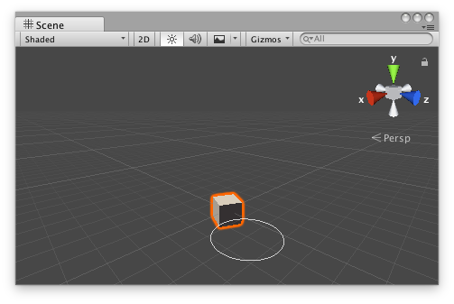

Handles.Slider2D
public static Vector3 Slider2D(int id,
Vector3 handlePos,
Vector3 offset,
Vector3 handleDir,
Vector3 slideDir1,
Vector3 slideDir2,
float handleSize,
Handles.CapFunction capFunction,
Vector2 snap,
bool drawHelper = false);
public static Vector3 Slider2D(Vector3 handlePos,
Vector3 handleDir,
Vector3 slideDir1,
Vector3 slideDir2,
float handleSize,
Handles.CapFunction capFunction,
float snap,
bool drawHelper = false);
Parameters
| id | (optional) override the default ControlID for this Slider2D instance. | |
| handlePos | The position of the current point in the space of Handles.matrix. | |
| offset | (optional) renders the Slider2D at handlePos, but treats the Slider2D's origin as handlePos + offset. Useful for Slider2D instances that are placed/rendered relative to another object or handle. | |
| handleDir | The direction of the handle in the space of Handles.matrix, only used for rendering of the handle. | |
| slideDir1 | The first axis of the slider's plane of movement in the space of Handles.matrix. | |
| slideDir2 | The second axis of the slider's plane of movement in the space of Handles.matrix. | |
| handleSize | The size of the handle in the space of Handles.matrix. Use HandleUtility.GetHandleSize if you want a constant screen-space size. | |
| snap | (float or Vector2) The snap increment along both axes, either uniform or per-axis. See Handles.SnapValue. | |
| drawHelper | (default: false) render a rectangle around the handle when dragging. | |
| capFunction | The function to call for doing the actual drawing. |
Returns
Vector3 The new value modified by the user's interaction with the handle. If the user has not moved the handle, it will return the position value passed into the function.
Description 描述
Make a 3D slider that moves along a plane defined by two axes.
This method will draw a 3D-draggable handle on the screen. The handle is constrained to sliding along a plane in 3D space.

2D slider handle in the Scene View.
Add the following script to your Assets folder as Slider2DExample.cs and add the Slider2DExample component to an object in a Scene.
using UnityEngine;
[ExecuteInEditMode] public class Slider2DExample : MonoBehaviour { public Vector3 targetPosition { get { return m_TargetPosition; } set { m_TargetPosition = value; } } [SerializeField] private Vector3 m_TargetPosition = new Vector3(1f, 0f, 2f);
public virtual void Update() { transform.LookAt(m_TargetPosition); } }
Add the following script to Assets/Editor as Slider2DExampleEditor.cs and select the object with the Slider2DExample component.
using UnityEditor; using UnityEngine;
[CustomEditor(typeof(Slider2DExample)), CanEditMultipleObjects] public class Slider2DExampleEditor : Editor { protected virtual void OnSceneGUI() { Slider2DExample example = (Slider2DExample)target;
float size = HandleUtility.GetHandleSize(example.targetPosition) * 0.5f; float snap = 0.1f; Vector3 handleDirection = Vector3.up;
EditorGUI.BeginChangeCheck(); Vector3 newTargetPosition = Handles.Slider2D(example.targetPosition, handleDirection, Vector3.right, Vector3.forward, size, Handles.CircleHandleCap, snap); if (EditorGUI.EndChangeCheck()) { Undo.RecordObject(example, "Change Look At Target Position"); example.targetPosition = newTargetPosition; example.Update(); } } }